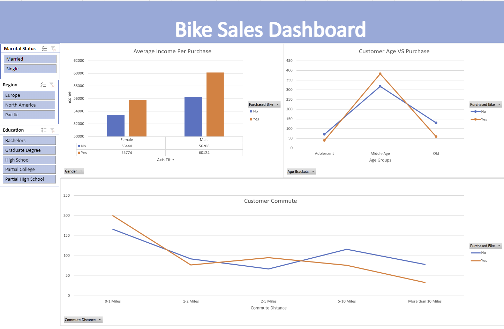

More About Me
Dear Recruiters,
With a Bachelor of Science in Probability and Statistics and a minor in Business from the University of California, San Diego, I offer a strong academic foundation.
Moreover, backed by one year of experience as a Senior Analyst, I bring a meticulous attention to detail, effective communication and empathetic listening skills, along with exceptional patience and time management abilities.
I am confident that this blend of education and practical experience makes me a well-rounded candidate capable of providing fresh insights and contributing effectively to your team's success.
Thank you for considering my application; I look forward to the opportunity to discuss how I can positively impact your organization.
Sincerely,
Sharon Huang


Employing SQL, delving into COVID-19 data involved a thorough comparative analysis of distinct variables within the dataset to extract comprehensive insights into the extensive ramifications of this global crisis.

Utilized Tableau Public to craft charts, graphs, and maps, visually presenting the extensive impact of COVID-19 on a global scale using datasets.
Using Python with numpy, pandas, and seaborn, the movies dataset was cleaned and analyzed to identify correlations among variables, highlighting votes and budget as having the strongest correlation with gross earnings.
Applying SQL, the Nashville Housing data was thoroughly explored, with subsequent data cleaning enhancing its clarity and facilitating streamlined analysis.

Via Microsoft Excel, cleaned and restructured the bike dataset, generating pivot tables and a dashboard. This examination unveiled a correlation where middle-aged males displayed a heightened tendency for bike purchases.

Employing MSSQL, conducted data cleansing on critical datasets, subsequently employing Power Query and Power BI to construct a bespoke dashboard aligning with business needs.